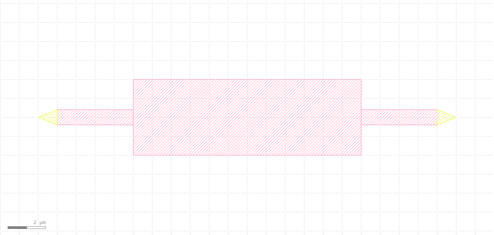
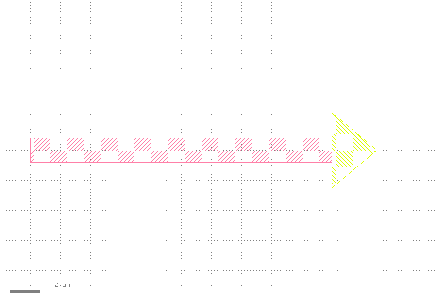
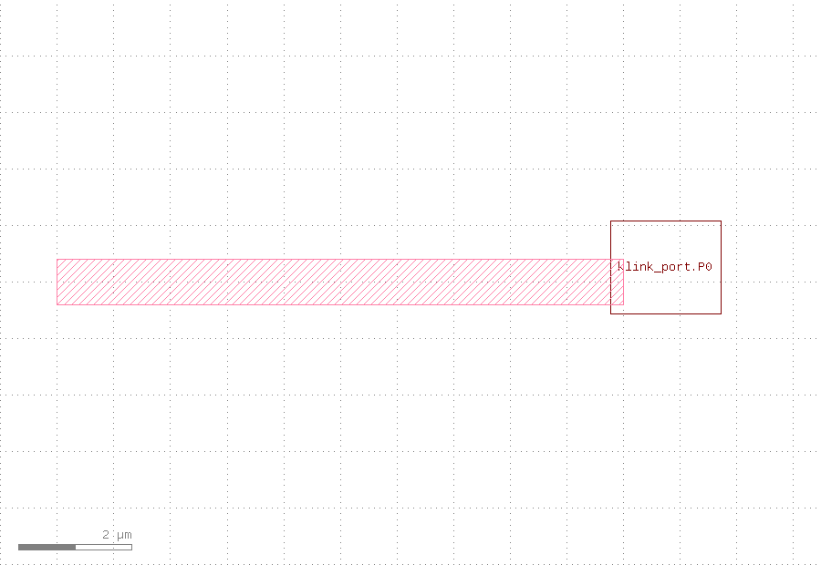
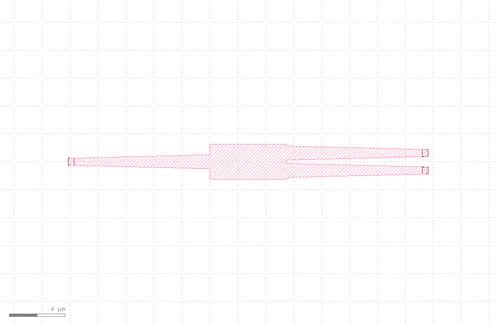
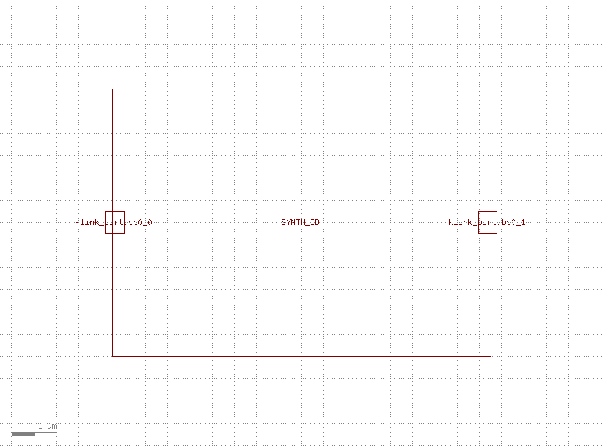
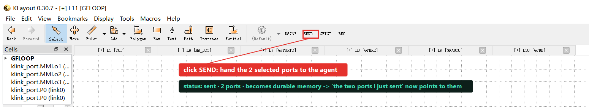
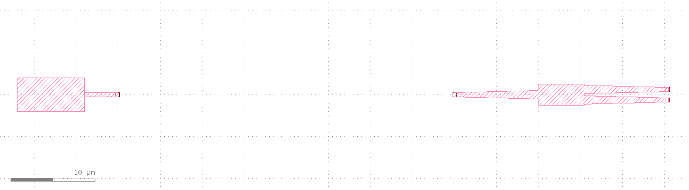
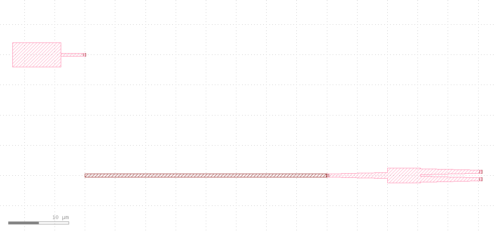

gdsfactory photonics: three ways to get ports + drag-to-reroute
Before you can route, klink has to know where each device's ports are. This tutorial walks three ways to get klink Ports onto a device — as a conversation — hand-drawn triangle conversion (custom devices), standard gdsfactory auto-ports, and PDK blackbox stub-convention harvest — with a deliberate cautionary example where the triangle base is drawn wrong. Once the ports exist, it runs the SEND selection → route → move device → reroute interactive loop. Every step spells out what the agent said, which tool it called, and what came back, with the real KLayout screenshot from that moment.
view.screenshot, and only the one shot that needs to show a toolbar button (SEND) is a full-window capture. The demo runs in throwaway tabs and never touches an existing working tab; it uses a few ordinary layers (1/0 waveguide, 12/0 routing, 999/99 port markers) and no real process PDK.Part 1 · three ways to get a Port
The hand-drawn port convention is simple: one triangle (a 3-point polygon) is one port — the triangle's apex direction is the port orientation, and the triangle's base length is the port width. So the base has to match the waveguide width (0.8 µm here); you can't draw it any old size. Both your triangles sit with their base right on the 0.8 µm waveguide end and their apex pointing out — textbook. Here's the before (yellow is your hand-drawn triangles):

Then one call turns the triangles into standard klink Ports — it reads each triangle's geometry, infers orientation, width and position, marks a proper Port, and deletes the raw triangle:

P0 / P1, width exactly 0.8 µm, orientation 180°/0°. Because the base sits right on the waveguide edge, klink also recognizes them as edge-attached ports (attached=True) that can slide along the edge during routing.Good question — precisely because base = width, apex = orientation, a sloppy triangle goes wrong. Here's a triangle with a 2.5 µm base (three times too wide) on a 0.8 µm waveguide, and the conversion comes out all wrong: width read as 1.95 µm (doesn't match the waveguide), orientation dragged off to 270° by the long-edge heuristic (pointing down, not out at 0°), and because the base can't reach the waveguide edge, the port is floating (attached=False).


Takeaway: when hand-drawing ports, make the triangle base match the waveguide width and the apex clearly point outward. klink won't guess the width you meant — it faithfully turns the geometry you drew into a port. Draw it accurately and the port is accurate.
A standard gdsfactory device carries its own port definitions, so there's no hand-drawing. When you place the component, klink marks the ports as klink Ports automatically from gdsfactory's Port objects — position, orientation and width all follow the component. An mmi1x2 has 3 ports: input o1 facing left, two outputs o2/o3 facing right.

mmi1x2: 3 ports marked as klink Ports automatically (o1 input / o2 o3 outputs), width 0.5 µm = gdsfactory's default waveguide. Not one hand-drawn stroke.A foundry PDK blackbox doesn't hand you gdsfactory Port objects, but it usually follows a convention: small stub boxes on the waveguide layer at the cell boundary (one common convention is 0.5×0.5 µm boxes), each stub being one optical port. klink's approach: you tell it the convention (which layer is the waveguide, how big the stub is), and it harvests the ports from the live instance geometry — ports are derived data, so if you move the device in the GUI, just re-harvest to refresh. Here's a synthetic "foundry-style" blackbox (opaque body on 60/0, two 0.5×0.5 stubs on waveguide layer 1/0):

SYNTH_BB: 2 ports harvested by the stub convention (bb0_0 / bb0_1), orientation inferred from stub position.pdk.py; klink ships no default. A real foundry PDK blackbox follows the exact same path, just with that PDK's real wg_layer / stub_size_um. (This site publishes no specific foundry's PDK content.)Part 2 · SEND → route → move → reroute
Once the ports exist, you can run klink's interactive loop. Below, the custom device from above (hand-drawn port P0) and a gdsfactory mmi1x2 are placed facing each other, sharing one net link0 — then connect, move one, and reconnect.
When you hit SEND, the two selected ports enter my session memory with a durable id — so later when you say "the two ports I just sent" I resolve them exactly, no need to re-quote coordinates. Both are on net link0 (the custom device's P0 on the left, the MMI's input o1 on the right).

SEND (red box is annotation) to hand the two link0 ports to the agent. The cell tree on the left shows klink_port.P0 (link0) and the MMI's three ports.Both ports are on link0 and face each other, so route a waveguide straight across, written to the 12/0 routing layer. Before, the gap between them was empty (left); after, they're connected (the darker waveguide on the right).

link0 ports face each other with an empty gap.
12/0) connects the two ports, 0 crossings.The device moved, but that route is still pinned to the old coordinates — one end is now floating, disconnected from the moved device. This is the "just dragged, not yet rerouted" moment: the route is stale. (Here a logged exec.python reproduces the GUI drag — it only changes the device position, not the route, not the net.)

Re-run the same route call — it re-reads the live port positions (P0 is now at its new coordinates), and replaces the old route with a waveguide that follows to the new spot. The device moved, the wire caught up with one smooth S-bend, nothing else changed.

Verify, not screenshot
As in Core Concepts, screenshots are for humans; the real proof of done is the structured return. Every step here has checkable numbers: hand-drawn conversion gives width=0.8 (exactly the waveguide width), the cautionary example gives width=1.95 / orient=270° / attached=False (faithfully reflecting the wrong triangle), auto-ports 3 / blackbox harvest 2, route length=40 → reroute length=60, crossings=0. The images just make it obvious; success is judged on those returns.
Next
Pick the port method by situation: your own device → hand-drawn triangles (remember base = width); a standard gdsfactory device → ports come automatically; a foundry blackbox → harvest by its stub convention. Once the ports exist, the SEND / route / drag / reroute loop treats all three the same. To see a whole gdsfactory script taken over in one call into this loop (thermo-optic MZI, tilted grating couplers, electrical nets), see the gdsfactory MZI takeover tutorial; for more real conversations of the agent turning a sentence into a device / DRC / LVS, see the chat walkthroughs at the top of the tutorials page.